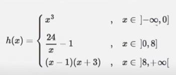

Exercício
Dificuldade
Pontos
Data limite
Créditos
Ficha07_012
Normal
4.0
28/11/2021 00:00:00
(c)M@nso 2021
Formula by branches III
Implement the function h. The value of x must be entered by the user

Input
Output
-1
x : -1.0 f(-1.0)= -1.0
0
x : 0.0 f(0.0)= 0.0
4
x : 4.0 f(4.0)= 5.0
8
x : 8.0 f(8.0)= 2.0
10
x : 10.0 f(10.0)= 117.0
2.613
x : 2.613 f(2.613)= 8.184845005740527
12.155
x : 12.155 f(12.155)= 169.054025
-2.837
x : -2.837 f(-2.837)= -22.833790253000004
13.859
x : 13.859 f(13.859)= 216.789881
0.474
x : 0.474 f(0.474)= 49.63291139240506
Algorithmi 22.05 Student version (c) Antonio M@nso 2022 Instituto Politécnico de Tomar - All rights reserved